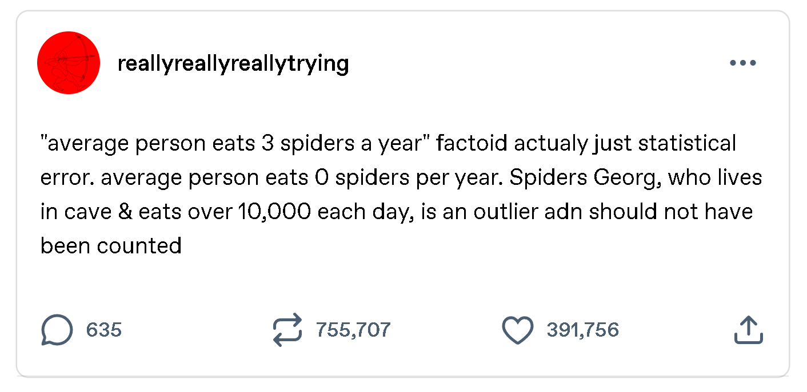
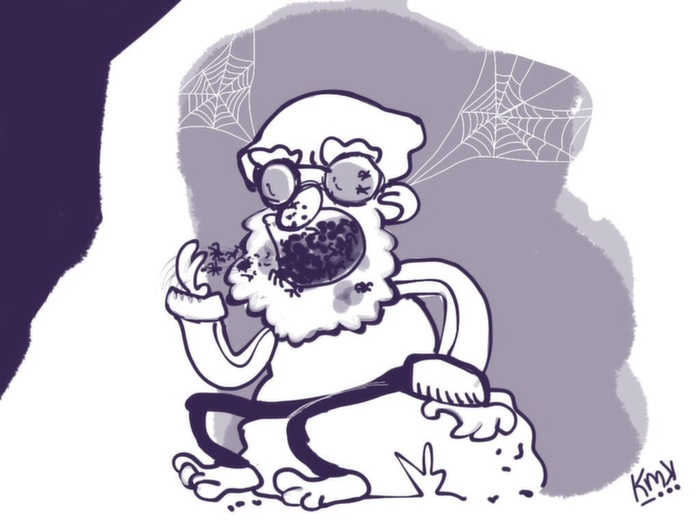
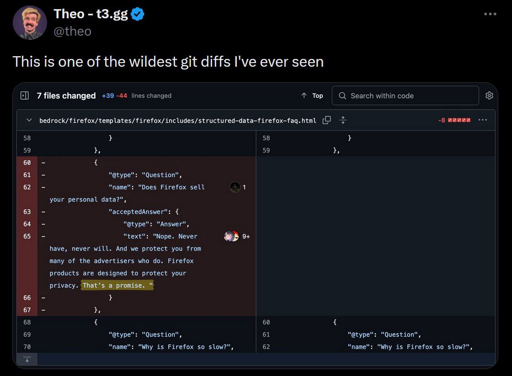
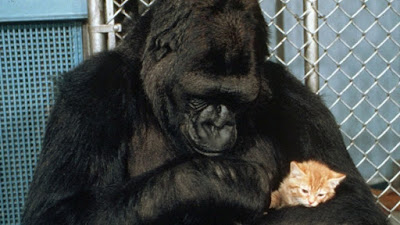
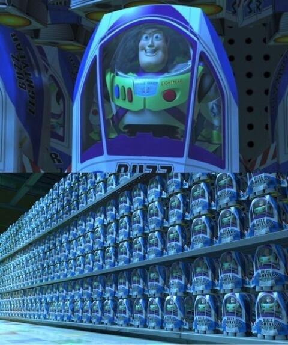
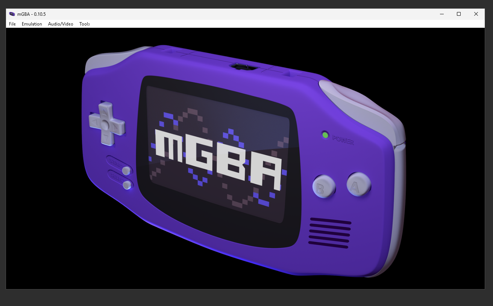
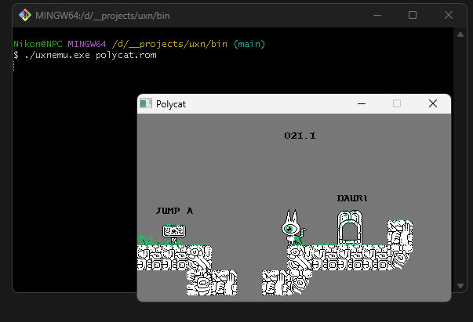

My Task:
Create a stylized business report showcasing and summarizing my posts for each week. Aside from my professor and classmates, my audience is my future employers.
Structure:
Each section will be a separate HTML page. The home page will contain links to each week, making it 6 weekly pages and one page reserved for the final conclusion. The home page must have an engaging title and an image, as well as a summary and an introductory paragraph outlining my work's purpose. Parts of my weekly work must be incorporated into my pages as text and media. Also, I must add transitions between my weekly pages, so that they are meaningfully connected with one another. Each weekly page must contain a link to the following page. The conclusion page will contain a link to the home page making the website's structure cyclical. Global styles are managed in styles.css file.
Raw Content:
Week 1: Introduction to Course, Ethics, & the Digital World
Post1: Choice 1
-
Nice to meet y'all! I'm Nikon, a student from Kazakhstan. My major is Management Information Systems. My favorite possession at the moment is this bunny-looking lime plushie I got as a present from a Secret Santa. They said, it made them think of me, that the plushie resembled me. Here's a photo of it and also a few photos of me spending time with my friends at a summer house in Petropavlovsk, my hometown :3


-
Based on the materials provided, "digitization" is a word used to describe the process of turning analog media into digital media. It has no emotional or axiological connotations, unlike "digitalization" that is the movement advocating for transformations in social relationships having to do with information exchange (e.g. the education process, taxation, patient medical information), ultimately adopting them into the digital medium. Basically, digitalization refers to the way digital information influences and structures the reality we exist in.

Many services available digitally are delivered remotely and automatically
For example, in my country an e-government system was developed that stores legal documents in a digital format. It is accessible to Kazakhstani citizens via web and mobile apps. As for digitization, I remember finding a VHS tape of my parents' wedding. Prior to that, some 20 or so years ago, it was also digitized and stored on a hard drive as a file. This way, we have two instances of the same recording, stored in analog and digital carriers respectively.

I chose these examples, because they are very personal to me.
-
Having read Schoentgen & Wilkinson (2021), the five major ethical concerns for digital technology appear to be privacy/consent, security, accuracy, fairness, and accountability. According to my ethical system, all social relationships should be built around consent, so I believe in the importance of ensuring that software and hardware respects the user's choice, as well as user's privacy and social fairness. In applied ethics' terms, my views translate into supporting the Free Software movement, the Copyleft licenses, and standing against tech initiatives that jeopardize the safety of marginalized communities. These principles are vital to building a world that I'd enjoy living in.
-
The challenges of regulating technologies have to do with imposing regulations upon decision-making entities, like governments and private companies. Those include: protecting consumers' rights, protecting personal privacy, protecting national economic interests, enforcing the rules of digital technology use, preventing and fighting existing market monopolies, regulating patents and business secrets, establishing international technological standards, censoring access to information (in extreme cases, banning access to the global internet, only allowing specific resources to be accessed).

I have been aware of payment processor (PayPal and Stripe) and credit card companies regulations, but I will not describe it in detail, because of the word limit
My general attitude to regulations is skeptical. They mostly seem to hurt common people, while things that are supposed to be highly-regulated such as generative AI, data centers, and block chains are left free of regulations, leading to ethical violations. Regulations are definitely needed, but they have to be approached with caution.
-
The technology that I am going to question is Flock AI-powered surveillance cameras (license plate readers, allowing to track the location and identity of city residents) and AI surveillance cameras in general. It is significant, because as of late these cameras are getting installed on the streets of some American cities (Denver, Berkley). In general, surveillance is always controversial and deserving of civil attention. Here are the ethical questions so far:
Why are the cameras getting bought without public consent and, in some cases, against the public's clearly expressed rejection?
Why should the taxpayers' money be spent on surveillance?
How accurate are the cameras at detecting criminal activity? What is the error rate? Who is accountable for errors?
Are the cameras secure enough? How susceptible are they to hacker attacks?
Who owns the data and what is the data lifecycle?

-
To all my peers, I'd like to ask the following question: "If the penalty for a crime is a fine, then that law only exists for the lower class. How would you propose to meaningfully hold tech giants such as Google, Microsoft, Meta, Palantir, and others ethically accountable before the public if state monetary sanctions have proven themselves inefficient?"

Post2
Dear Aida,
You've completed the task well. I can totally agree with you about regulations developing slower than technology. It is indeed a great challenge for digital ethics. You might be interested in reading about plans for integrating AI into medicine. It all happens too fast. After reading provocative articles like this, it becomes clear that AI regulations are necessary.
As for your question, I used to obsess over what I did on the Internet when I was 12. Back then, I had an intense feeling of paranoia and tried to conceal whatever actions I thought could get me compromised. I had passwords for everything, VPNs, burner accounts, and privacy browsers. However, I did not change my content browsing habits.
Now I'm just less concerned about security overall. Writing on cyber ethics, I have become disillusioned about anonymity. I don't think it ever existed. I know perfectly well that I'm being watched and traced. Fine by me. And even if true anonymity was possible, I would still behave ethically and sensibly, as I usually do. On the legal side of things? If they really wanted to jail me for something I saw or shared on the net, they will find a reason.
Take care! Here are the APA citations, if you need them:
Pearl, R., MD. (2025, September 2). Will GPT-5, Claude, Gemini break doctors’ monopoly on medical expertise? Forbes. https://www.forbes.com/sites/robertpearl/2025/09/02/will-gpt-5-claude-gemini-break-doctors-monopoly-on-medical-expertise/
OpenAI (2026). Introducing OpenAI for Healthcare. https://openai.com/index/openai-for-healthcare/
Respectfully,
Nikon
Week 2: Data Life Cycle & Acquisition
Post1: Choice 1
-
According to Gutman & Goldmeier, data is distinct from information. It is the encoded form of information, the signals received but not yet processed. The one data project I remember working on concerned a final assignment I did for the previous ISTA course. I had chosen a dataset from Kaggle.com about book metadata collected from GoodReads. I had some interesting visualizations made as I tried to answer the questions on what the data could mean. A few insights I got were: the distribution of book ratings by language is uneven, and there is a correlation between a book's popularity and its total number of pages. The images below show two graphics that visualize the results of my research.


-
According to Berman et al’s "Realizing the Potential of Data Science", data science is an interdisciplinary field, connecting multiple otherwise unrelated fields. The authors interpret it as a medium through which people from different occupations can find a common language and better understand the situation as a whole. I find data science essential, because our economy is data driven: data is required for making sound plans and taking successful financial decisions.
-
The data life cycle is a way of logically separating the different periods of a data's existence based on the data's relation to a practical use; the data's relation to a human with a goal. The five steps of this process that Berman highlights are in order: Acquisition, Cleaning, Using, Publishing, Destroying or Preserving. I think that this proposed lifecycle contains all of the necessary steps. It does not miss anything. It would not make sense to abstract the question further.
-
Everything is a matter of ethics. Everything that poses value to a community, at least. That's why data is being regulated, because it's valuable and powerful.
-
The difference between qualitative and quantitative is pretty straightforward: qualitative data cannot be measured with numbers (these are discrete characteristics instead of continuous data), and quantitative data is usually not concerned with subjective evaluations, providing figures instead. In the data lifecycle, qualitative data can be seen as a powerful emotional tool on the Publishing stage. Qualities evoke greater feelings than plain numbers. My experience with qualitative data has mostly been influenced by surveys and humanitarian tests in the fields of sociology and psychology. As they are not precise sciences, a researcher has to resort to operate with qualitative metrics based on interviews, observations, and inherent bias. However, qualitative metrics are not necessarily supposed to be biased. For instance, the material that an object is made of is objectively established qualitative data.
-
Since Kaggle database has already been mentioned by my peers, I would suggest using Anna's Archive as a source for a data science project. It is known to provide free (and paid) access to pools of data, mainly that on literature of all kind, hence the reason for its use in data science related research and practical projects. The website's significance can be proved by evidence of NVIDIA using Anna's Archive data for LLM training. And even outside of machine learning, the website is useful as a source of meta-info on books.
-
A question to my peers: "If you had a choice in the matter, what would you want to happen to your personal data upon your death? What would be your legacy?"
-
Berman, F., Rutenbar, R., Hailpern, B., Christensen, H., Davidson, S., Estrin, D., Franklin, M., Martonosi, M., Raghavan, P., Stodden, V., & Szalay, A. S. (2018). Realizing the potential of data science. Communications of the ACM, 61(4), 67–72. https://doi.org/10.1145/3188721
-
Gutman, A. J., & Goldmeier, J. (2021). What is Data? Becoming a data head: How to Think, Speak, and Understand Data Science, Statistics, and Machine Learning. John Wiley & Sons.
-
Van Der Sar, E. (2026, January 20). ‘NVIDIA contacted Anna’s Archive to secure access to millions of pirated books’ TF Publishing. https://torrentfreak.com/nvidia-contacted-annas-archive-to-secure-access-to-millions-of-pirated-books/
Post 2
Hi, Darkhan!
I have read your answers and it seems that we have a similar understanding of data science. I like that you specifically stress that data is "gathered and stored for the benefits of others". This is pretty accurate to us, as users, who produce the data that is then collected from us and used for the benefits of third parties. Also, your second answer made me remember a famous incident that had to do with data analysis. Yes, we may use data to predict or better understand the market or the trends and patterns in a particular (economic) phenomenon, as you noted correctly, but it is not guaranteed that we make no mistakes.
I chose my GoodReads book dataset, because it had a "rating" field. It allowed for research focused on the patterns in book popularity, which is something many people including me are curious about. Looking back, it wasn't the best dataset and GoodReads wasn't the best data source either, but at the time being it looked like a feasible task for my level of expertise in data science.
The article on the incident in question is:
Ingraham, N. (2013, April 17). A simple Excel calculation error puts a famous economic study under scrutiny. The Verge. https://www.theverge.com/2013/4/17/4234136/excel-calculation-error-infamous-economic-study
Have a wonderful day.
Sincerely,
Nikon
Week 3: Data Cleaning
Post 1: Choice 3
-
This week's visual is an iconic Tumblr post about statistics:

Since it's not really a visual in a sense that it's just a screenshot of a joke, here's an artistic interpretation of Spiders Georg by a now deleted Tumblr blog of leanmeanjolyne. The source page could not be retrieved with the Wayback Machine, unfortunately.

-
My visual is a humorous explanation story to a widely believed (false) factoid claiming that on average a human swallows three spiders a year. This anecdote proposes that there had been a statistical outlier in the research data -- the alleged Spiders Georg skewing the average by consuming over 10000 spiders daily.
-
This example illustrates the silliness of statistical anomalies and is directly related to bad practices in data cleaning, i.e. not removing the outliers and making disturbingly dubious conclusions based on faulty analysis. Even though Van den Broeck et al (2005) notes that it's not always obvious if a data point is erroneous, cases such as the one described above are absurd enough to be noticed with the untrained eye, one might assume. Still, this whole unnoticed outlier incident may as well function as a social commentary on the lack of proper rigor in academia, leading to easily preventable mistakes owing to plain inattentiveness.
-
The ethical value of this meme is that it has much to do with statistical errors and their causes. Data cleaning may be a tedious task, but it has to be done, because unless we are committed to this step, we end up with the wrong insights. The ethical point concerns responsibility, both that of researchers and the readers. We, as readers, should have a healthy skepticism when dealing with statistical data. The figures may look convincing, but we should always be aware that scientists make mistakes too. Science papers containing misinterpreted data have disastrous ethical implications, largely due to people's initial blind faith in the infallibility of the calculations.
References
Van den Broeck J, Argeseanu Cunningham S, Eeckels R, Herbst K (2005) Data cleaning: Detecting, diagnosing, and editing data abnormalities. PLoS Med 2(10): e267.
reallyreallyreallytrying. (2013, January 1). really really really trying. Tumblr. https://reallyreallyreallytrying.tumblr.com/post/40033025233/average-person-eats-3-spiders-a-year-factoid
Post 2
Hello, Adina.
In my opinion, there are no innocuous data errors. It is never okay to leave them be. In the long term, these mistakes may compile in a particular field of knowledge, because another research may base its findings on an erroneous one and so on and so forth. Perhaps, the only somewhat acceptable strategy as an alternative to fixing data errors is detecting and describing them, so that people who read your paper are aware of any inconsistencies. However, this approach lowers the credibility of your research, compared to outright correcting the errors.
As for your answers, I agree that clean data is important for building trust. Your description of the data cleaning process as a whole is accurate too. I could also add that clean data presumes honesty and readiness to remain unbiased, even if doing so is unprofitable. The relevance of the examples I am about to provide may be questionable, but there are no events, articles, or scientific papers on my mind that would fit the topic of data cleaning neatly. Thus, I suggest you read about an ethical controversy regarding the aggressive marketing of infant formula by Nestle, despite the data showing serious health complications in babies and an increased mortality, especially in third world countries. And here is a short article on fraud in science.
Have a nice day.
Regards,
Nikon
Anttila-Hughes, J., Fernald, L. C., Gertler, P., Krause, P., Tsai, E., & Wydick, B. (2018). Mortality from Nestlé’s Marketing of Infant Formula in Low and Middle-Income Countries. https://doi.org/10.3386/w24452
Bergman, J. (2009). Why the epidemic of fraud exists in science today. Journal of Creation, 18(3), 104–109. https://creation.com/en/articles/science-fraud-epidemic
Week 4: Data Use & Reuse
Post 1: Choice 3
-
Nothing is new under the sun, so my visual this week is about data misuse:

-
What we see here is a Firefox git repository before and after a commit that has seemingly removed the browser's statement on valuing users' privacy in an FAQ section. Whether it's real or fake is largely irrelevant, because there are tens of Firefox forks with better moral principles. However, I believe, a decision to omit the privacy statement is representative of the direction Mozilla is taking now, from the introduction of controversial and involuntarily enabled AI tools to doing business with Chinese data vendors.
-
As has been mentioned in our classwork material, one of the criteria of an ethical data use and reuse (analysis and collection) scenario is the use of precise and understandable language when describing data processing policies. In my opinion and the opinion of many others, in the example above the new language Mozilla uses to talk about privacy is less transparent, less simple, and more nebulous.
-
I believe that a company or any entity collecting data, should be responsible for making its users understand how exactly their data is being used (whether in ML training, for advertisement, or for research), whether it is anonymized or not, whether it can be erased and how, etc. etc. all in simple accessible language that allows no misinterpretation and protects from any misuse on the company's side. So that, as suggested in the data use ethical principles by Tom Alby (2023), the data can only be used for the limited purposes explicitly outlined beforehand that the users are made aware of.
-
Brodkin, J. (2025, March 1). Firefox deletes promise to never sell personal data, asks users not to panic. Ars Technica. https://arstechnica.com/tech-policy/2025/02/firefox-deletes-promise-to-never-sell-personal-data-asks-users-not-to-panic/
-
Alby, T. (2023a). Ethical handling of data and algorithms. In Data Science in Practice (pp. 261–272). https://doi.org/10.1201/9781003426363-11
Post 2:
Hi, Rustem! Your thought direction in this one has caught my attention. You chose quite an unusual visual.
I have only ever read The Hobbit and had little exposure to LoTR movies (still pretty fond of the fantasy genre). I appreciate your insistence on the importance of data in military strategic planning and command. Despite it being an unconventional roundabout explanation, in truth, data analysis plays a crucial role in the success of war conquests.
I could outline the similarities of Saruman's role as a commander to real life military data solutions, one of them being, by a coincidence, Palantir Technologies (named after a powerful artifact from LoTR allowing its user to see real events happening everywhere in the world at the expense of their sanity and without showing the whole picture). As you correctly notice, transparency and accuracy are indeed mandatory in the digital ethics, especially when it concerns the handling of data meant for offensive and defensive operations with high probabilities of civilian casualties, unnecessary damages, and humanitarian violations.
The topic of information technology being used for war and intelligence collection purposes requires a more careful analysis that I am unable to provide. All things war-related are usually highly private and non-transparent to the general population. Still, it's interesting to meditate on the impact of (im)proper ethical guidelines not solely on the fulfillment of campaign goals but on harm reduction. You might find it useful to look into the history of US drone strikes occuring during Obama's presidency.
Also, here's this one book I read on propaganda and war ethics,
Ponsonby, A. (1928). Falsehood in war-time : containing an assortment of lies circulated throughout the nations during the Great War. In Garland Pub. eBooks. http://ci.nii.ac.jp/ncid/BA27016377
Kind regards,
Nikon
Week 5: Publish Data
Post 1: Choice 1
-
The ethical violations mentioned in the first table of Warsy & Warsy's (2019, p. 187) article seem equally concerning with the exception of a few particular practices that I will now outline. To my judgement, the worst infringement of publishing ethics in academic research must be undeclared conflict of interest. Compared to other mistakes like plagiarism or outright malicious actions such as research fabrication and manipulation of visuals, the undisclosed allegiance of a researcher or a research group to an organization/actor partial to the subject of their study is harmful on a whole different level. An explanation is in order.
There have been many cases of fraudulent or hastily-made publications over the course of scientific research's existence, yet the scientific community at large can debunk the truthfulness of these publications rather quickly. One case I can remember off the top of my head pertains to the fields of zoology and linguistics -- the case of Koko the Gorilla. Surely, most of the conclusions related to the primate's ability to formulate and understand sentences have been compromised by the original researchers' bias (Francine Patterson, an animal zoologist, the head investigator) and worsened by the team's reluctance in giving access to Koko and the data collected from her (Linden, 1986, p.120), which is actually related to the principles of open data discussed this week as well. Again, this kind of research is not completely futile: there are positive social outcomes, like a shift in public perception of animal intelligence and a rise in empathy towards animals.

With that out of the way, let's move on to the reason why a failure to disclose conflict of interest is unacceptable. In 2018, there was an international controversy when the physician-in-chief at a major research center, José Baselga, had been accused of improperly disclosing his ties to Big Pharma and his sources of funding (billions of dollars in size), leading to the objectivity of more than 105 of his research papers being questioned. Not to mention his unannounced position as a board member of multiple pharmaceutical and biotechnology companies. This shows that while his papers were not falsified and met academic standards of reference/authorship/citation, he had most likely been influenced by his sponsors' money -- a fact that neither we, as readers, nor the scientific community would normally be aware of.
-
Having reviewed the second table of the article, I find it that a significant portion of the practices spring from the Hippocratic Oath. Undoubtedly, they are essential, but there is one ethical principle, aside from interest disclosure, that is often dismissed by researchers working with people. "Every kind of deception must be avoided." I believe that test subjects have the right to know, especially if the research can be politically weaponized to further marginalize and demonize the participants, whether the researchers have an agenda, if they collaborate/share data with a political think tank, and how the data is planned to be used (and by whom). Women, POC, people suffering from chronic illness, neurodivergent people, gender and sexually non-conforming people, and other marginalized groups are susceptible to being victims of deception when voluntarily participating in research. It should also be noted that the data received from interviews should never be tampered with for deception, misrepresentation, or any other goal.
-
The article's third table contains one ethical principle I consider to be the most important one, which is "to write in one's own words." On the net, a new phrase has been going around, "ai;dr", that is itself the modified "tl;dr". The gist is: nobody wants to read AI generated stuff, even if it's written in perfect academic language. With the crisis of originality ever-present, modern, unique, and truly creative work is like fresh air.

-
Self-plagiarism is when you, as the author, repeat your previous ideas written in your past works as though they were new. Reusing one's work is not plagiarism when it is properly cited and treated not as new revelations but as past ideas, explicitly.
Since the article was out in 2019, it had not witnessed the AI boom. Logically, the authors do not mention using AI output as a form of plagiarism.
-
Have you ever been in a situation where you had to use/modify a piece of software or a hardware product and had to do without any official documentation? Do you think that all projects, even unfree/closed-source, should provide free documentation to the public, why?
-
Warsy, A.S. & Warsy, I.A. (2019). Publish Ethically or Perish. Journal of Nature and Science of Medicine 2(4), 186-195. https://doi.org/10.4103/JNSM.JNSM_17_19
-
Linden, Eugene (1986). Silent Partners: the Legacy of the Ape Language Experiments. New York: Times Books.
-
José Baselga resigns as physician-in-chief at Memorial Sloan Kettering - The Cancer Letter. (2018, September 14). The Cancer Letter. https://cancerletter.com/the-cancer-letter/20180914_1/
Post 2
Hi, Elnur! I liked the effort you put into the post.
It seems that we agree on how important original research is. Yes, producing new knowledge rather than recycling the old is a good ethical priority. With how much text is written by AI, it is difficult to sensibly estimate the percentage of existing research created entirely by a machine, but judging optimistically by the amount of AI-generated images, it must be at least 30% of what we have now. I reckon you are already familiar with the fact that researchers worldwide have been injecting prompts into their papers seen only to AI models. If you are not, please, have a read.
I have given your question careful consideration, but its meaning still evades me. That is a tough one you've got here. I guess, that's why they teach us courses like this one and the multiple English courses before it? So that every researcher has a standardized understanding of academic ethics and plagiarism? Of course, we should be culturally sensitive to those who are still learning the rules, but later on, it is expected that no double standards exist. In the end, we all have comparatively equal language proficiency and ethical awareness.
Best wishes,
Nikon
- Taylor, J. (2025, July 14). Scientists reportedly hiding AI text prompts in academic papers to receive positive peer reviews. The Guardian; The Guardian. https://www.theguardian.com/technology/2025/jul/14/scientists-reportedly-hiding-ai-text-prompts-in-academic-papers-to-receive-positive-peer-reviews
Week 6: Data Preserve & Destroy
Post 1: Choice 1
-
Drawing from Johnston's Step (chapter) 7 (2017, 231-233 pp.), preservation is a set of practices aimed at mitigating the risks of losing meaningful data (especially the kind that would likely be reused in the future). By anticipating format obsolescence, hardware failure, and accidents beyond our control, as well as monitoring the integrity and reusability of the stored data, safekeeping methods are developed that guarantee secure and redundant storage of data. In 7.1 Preservation Planning for Long-Term Reuse, the author uses digital preservation policies of the University of Minnesota as an example of selective data preservation with different levels of support (effort applied) from full support to no support at all -- providing a table with supported data formats (only the files in listed formats are saved whereas other files are discarded).
-
Also drawing from the same chapter, I picked a single Data Preservation Strategy (pp. 236-237) to review: Emulation. In general, this method is about creating isolated virtual environments and virtual machines that replicate older hardware on newer one, whether through emulation or virtualization. Surely, a few times I had to resort to using QEMU for my compsci projects, and, of course, I am familiar with emulators of GBA, SNES, PlayStation, and other outdated game systems first-hand. These are all tools for running one information system on top of another, but emulation does not end there. Specific solutions with preservation in mind have been developed, Collapse OS and uxn among them. Uxn is a virtual computer that is engineered to run on any pre-existing platform once an emulator is compiled for it, and CollapseOS is an operation system designed to work in postapocalyptic conditions. Uxn's primary focus are simple tools and games stored as ROMs, but this VM can run more complex software too, including the aforementioned Collapse OS.


you can play and download this game here
-
Based on Johnston's chapter 8 (2017, 253-254 pp.), the reason why it might be necessary to monitor how often data is reused is that the statistics of data reuse are crucial in understanding which data has been most impactful and which data has not been queried or downloaded repeatedly over a period of time. Tracking the engagement of users with data this way allows to identify high-quality, useful, pieces of data and negative examples of data (e.g. an article being cited in a negative light often), both worth preserving for different reasons. Negative citations are important too, because they are an example of what not to do or which theory has been proven wrong.
-
Once data curation stops, the fate of the data is decided and a proper public announcement is made. The metadata describing the data that used to be curated must be preserved. The reasons for the data project's cessation should also be mentioned. Among these reasons are: a lack of financial support, legal issues, insufficient engagement with data, data obsolescence. If the site that your data is hosted on is about to be discontinued, make a contingency plan and prepare options for migration to another web repository in advance.
-
Data overwriting. This method is different from the usual option of "deletion", as when a file is deleted, the memory it takes may not be overwritten but simply de-linked and marked as free. Overwriting is a pretty simple method that does not require the destruction of the physical carrier. Not applicable for situations when the data on a drive cannot be manipulated digitally due to a malfunction.
-
The right to be forgotten is a novel concept that is closely tied to the rise of social networks and Web 2.0. Most users' Internet footprint spans at least five years. Mistakes are commonly made over this period of time; embarrassing decisions we don't want to look back on. A person may grow but still remain connected to their past data -- being judged by others based on what is no longer relevant. That is where the right to be forgotten comes in handy. One may ask a service provider, e.g. Google, to completely delete their account data and start anew. At least, that is how it is supposed to work. The main difficulty is that, as we rely on cloud services to store our personal data, we may not own it to the fullest extent when compared to self-hosting services and storing the data on your local drive. This topic is also ethically ambivalent and controversial due to a conflict of interest: a user may want to be forgotten, but their data may be too valuable to be destroyed to researchers and advertisers.
-
What methods do you usually apply when purposefully destroying unwanted digital data?
-
Collapse OS — Bootstrap post-collapse technology. (2025). Collapseos.org. https://collapseos.org/
-
Johnston, L. R. (2017). Curating Research Data, Volume Two: A Handbook of Current Practice. Association of College and Research Libraries. Retrieved from https://hdl.handle.net/11299/185335
-
uxn. (2024). XXIIVV. https://wiki.xxiivv.com/site/uxn.html
Post 2
Hi, Aida!
First off, I appreciate the visuals, they really help communicate your response's ideas better. They are effective, because the data preservation infographics are made of easily-digestible symbols and shapes. Your strongest is about cryptographic erasure. One small suggestion is, your infographics are differently sized which makes your text less accessible.
For your first section overviewing the meaning of preservation, I would like to add that besides conserving the data formats, it is no less essential to conserve the mediums the data is stored in. We must know how to read the data from physical carriers, save it in reliable formats, and maintain legacy devices needed for interacting with it. The reason I make this addition is due to a prominent case of digital obsolescence, BBC Domesday Project.
It is a sort of a time capsule compiled from geographic, historical, and humanitarian knowledge of children from all over the UK in 1984-1986. However, in the course of LaserDisc technology's obsolescence, the disks that the data with text, images, and software had been written on have become unreadable after only 15 years. Thankfully, before the data was lost for good, a large snapshot of it has been saved in a different format on a different device.
Moving on to your question, in my opinion, the answer largely has to do with what we value more: the right to privacy and oblivion or the archival effort aimed at preserving knowledge. These are fundamentally opposite. From my experience, it hurts a lot when there is a tweet or a YouTube video that you remember existing but when you try finding it nothing comes up, not even with the WaybackMachine. I acknowledge that creators and users may choose to hide the content they produce over arbitrary reasons (concerns for personal/sensitive information included), but it pains me to see data disappear. Perhaps, as a compromise, the dataset you mentioned could be made private or partially open to the public after sanitation. Then, after every person in the dataset is dead, it would be ethical to make the dataset completely public as it will be considered a document of historical significance that must not be altered. Moreover, while they are still alive, the people mentioned in the dataset can be contacted and asked for their permission to publish the data related to them.
Finally, as another argument for preservation of all data, even the personal one, I find it that oblivion may also be viewed as a punishment. Please, read about damnatio memoriae for more information. Writing sentimentally, "we exist while we are remembered", and the majority of people are remembered by the data they produced and the memories they created in other people's minds.
Have a wonderful day and thank you for reading!
Sincerely,
Nikon
-
Wikipedia Contributors. (2024, November 23). BBC Domesday Project. Wikipedia; Wikimedia Foundation. https://en.wikipedia.org/wiki/BBC_Domesday_Project
-
Keeper of Forbidden Knowledge - Pepper&Carrot. (2025). Pepper&Carrot. https://www.peppercarrot.com/en/miniFantasyTheater/026.html
-
Damnatio memoriae. (2021, March 16). Wikipedia. https://en.wikipedia.org/wiki/Damnatio_memoriae